Due: Friday, November 19, 2021, 11.59pm on LMS.
Penalty for late homeworks: 25% for each day or part of a day.
Updated Nov 1.
Questions from Kupferschmid, Chapter 7 (available on LMS):
- 7.10.16 (b): Lecture 21. Note: The solution xLP * to the LP relaxation is given in the picture
on page 261. When you branch, you can solve 2-dimensional subproblems, so you can solve
the subproblems graphically.
- 7.10.40 (a) and (b): Lecture 22.
- Knapsack: The binary variables x1,x2,x3,x4 must satisfy the knapsack constraint
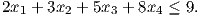
Find minimal valid inequalities satisfied by all feasible binary vectors, of the form
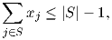
where S ⊆{1,2,3,4}. Your sets should be minimal, in that no subset of S gives a valid inequality.
For example, S = {1,2,3,4} leads to a valid inequality, but it is not minimal, since S = {3,4} also
leads to a valid inequality. Taking S = {3,4} does give the minimal valid inequality x3 + x4 ≤ 1.
(Lecture 21)
- 7.10.37: Lecture 22. Make sure your constraint is linear!
- Quadratic: Let x1 and x2 be binary variables, and let t be a continuous variable satisfying the
constraints

Show that if x1 and x2 are binary then we must have t = x1x2. (Note: it is sufficient to consider
different cases.)
In addition, read Sections 7.1–7.7 from the text.
You can consult with other students and you can use online resources, but you CANNOT submit the
questions to any online answering service, including Chegg.
Solving the homework problems (and other problems from the text) will improve your understanding of
the material.
It may be possible to find the solutions online or elsewhere: please do not use these solutions. Working out
the problems yourself will greatly improve your understanding of the material and help you on the
exams.
You can ask questions on slack, in addition to using office hours or email.
Solutions:
- 7.10.16 (b): Lecture 21. Note: The solution xLP * to the LP relaxation is given in the picture
on page 261. When you branch, you can solve 2-dimensional subproblems, so you can solve
the subproblems graphically.
Solution: Problem bb2 is
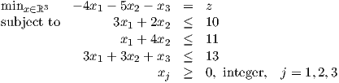
Solution to LP relaxation is x = (9∕5,23∕10,7∕10), z = -19.4. We let
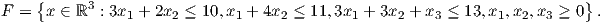
Branch on x2 first.
Optimal solution is x* = (2,2,1), z* = -19.
- 7.10.40 (a) and (b): Lecture 22.
Solution:
-
a.
- Problem is
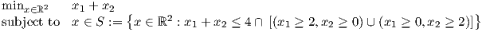
or equivalently
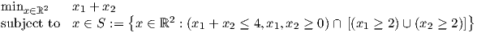

-
b.
-
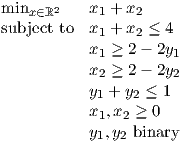
- Knapsack: The binary variables x1,x2,x3,x4 must satisfy the knapsack constraint
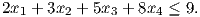
Find minimal valid inequalities satisfied by all feasible binary vectors, of the form

where S ⊆{1,2,3,4}. Your sets should be minimal, in that no subset of S gives a valid inequality.
For example, S = {1,2,3,4} leads to a valid inequality, but it is not minimal, since S = {3,4} also
leads to a valid inequality. Taking S = {3,4} does give the minimal valid inequality x3 + x4 ≤ 1.
(Lecture 21)
Solution:
There are 4 valid minimal cover inequalities:
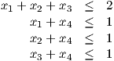
- 7.10.37: Lecture 22. Make sure your constraint is linear!
Solution: x1 ≤ 0.5(x2 + x3).
Note: the LP relaxation is tighter if we use two constraints: x1 ≤ x2 and x1 ≤ x3. We can get
an appropriate single inequality by taking any positive linear combination of the two
inequalities.
- Quadratic: Let x1 and x2 be binary variables, and let t be a continuous variable satisfying the
constraints
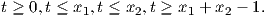
Show that if x1 and x2 are binary then we must have t = x1x2. (Note: it is sufficient to consider
different cases.)
Solution:
We calculate the possible values of t for each possible binary choice of x1 and x2:
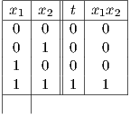
It can be verified that we obtain t = x1x2 for each choice.